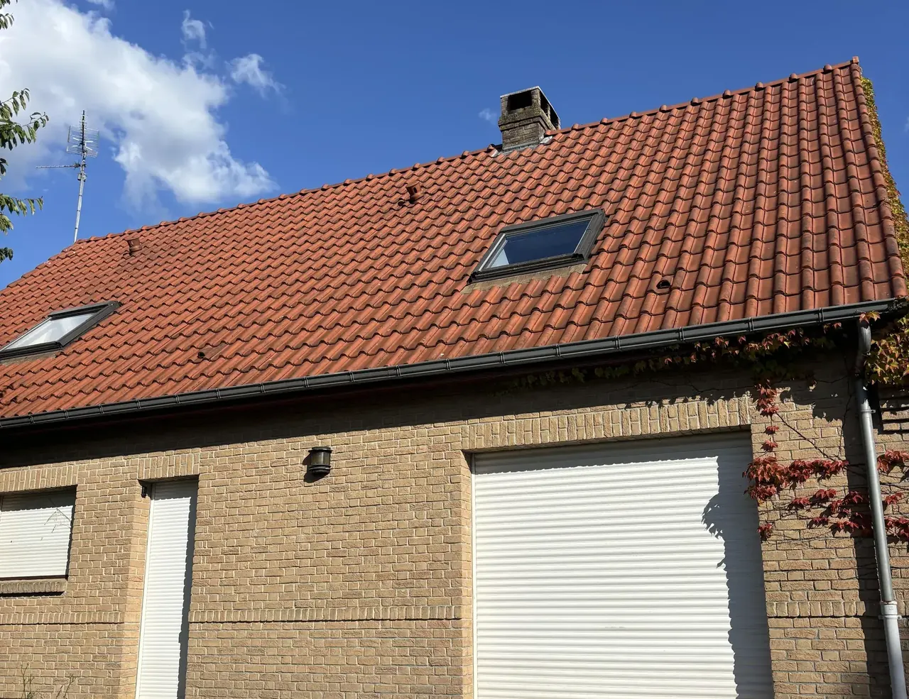
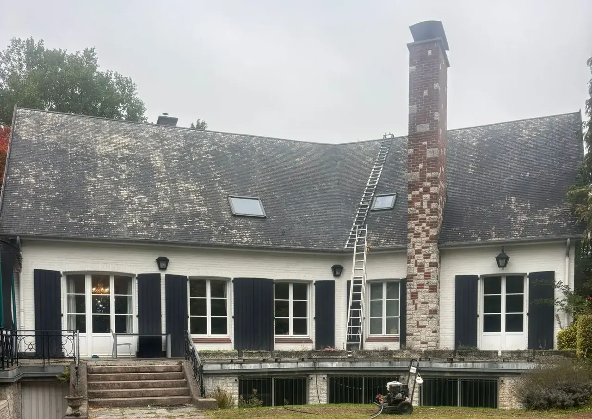
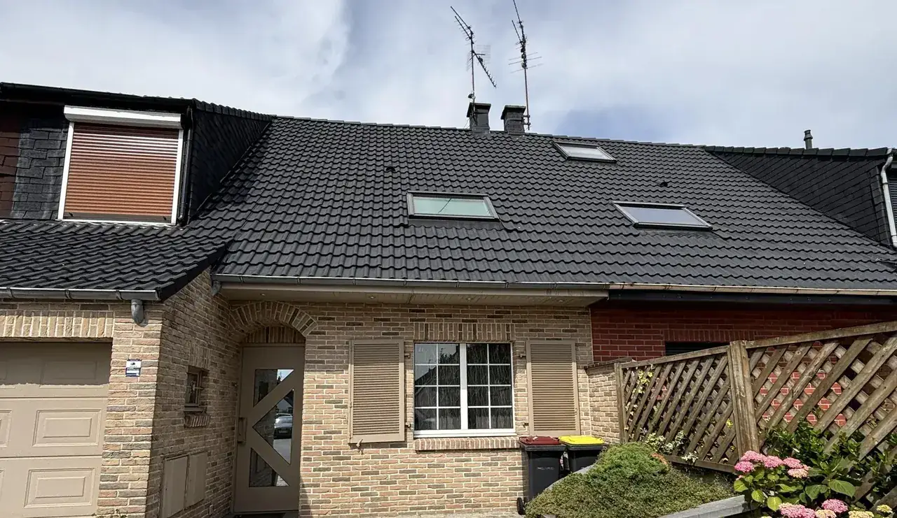
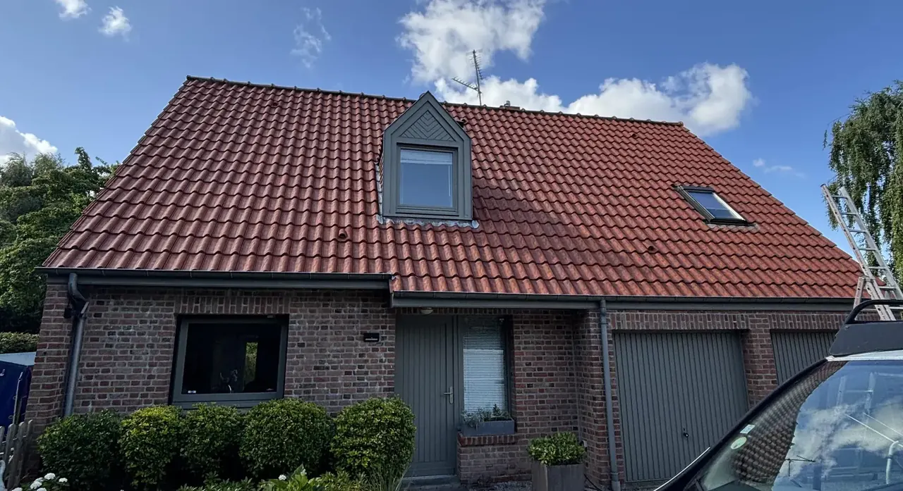

Articles et conseils
Nos guides pratiques sur le nettoyage et l'entretien de toiture, façade et terrasse dans le Nord-Pas-de-Calais : prix, saisons, méthodes et bons réflexes face au démarchage.

Quand démousser sa toiture dans le Nord et le Pas-de-Calais ?
Les bonnes saisons, la météo à surveiller, les signes qui ne trompent pas et le bon ordre entre démoussage et hydrofuge.
Lire l'articleDémarchage et arnaques au démoussage : reconnaître un professionnel sérieux
Ce que dit la loi quand on signe chez soi, les phrases qui doivent alerter et la checklist avant de signer un devis.
Lire l'article
Toiture en fibrociment : précautions avant un nettoyage
Amiante, haute pression, repérage avant travaux : ce qu'il faut savoir avant de faire nettoyer une toiture en fibrociment.
Lire l'article
Nettoyage de gouttières en Nord-Pas-de-Calais : pourquoi le faire avant l'hiver
Les risques d'une gouttière bouchée, les signes qui doivent alerter, et la bonne fréquence d'entretien avant les pluies d'hiver.
Lire l'article
Prix d'un nettoyage de toiture : ce qui fait varier le devis
Surface, pente, accès, matériau, encrassement, options : les facteurs qui font le prix, et comment obtenir une estimation gratuite.
Lire l'article
Nettoyage de façade en Nord-Pas-de-Calais : méthodes et produits à connaître
Identifier les salissures, choisir une méthode douce, ménager les joints d'une façade en brique : les bons réflexes.
Lire l'article
Nettoyage de terrasse en Nord-Pas-de-Calais : garder une terrasse propre toute l'année
Méthode pas à pas, produits adaptés selon le revêtement, et limites des produits naturels.
Lire l'article
Nettoyage de toiture, façade et terrasse : le guide complet
Une vue d'ensemble du nettoyage extérieur en Nord-Pas-de-Calais, avec un lien vers un guide détaillé pour chaque surface.
Lire l'article
Démoussage de toiture : pourquoi faire appel à un professionnel
Chute, produits mal dosés, haute pression : les risques d'un démoussage fait maison, et ce qu'un professionnel apporte.
Lire l'article